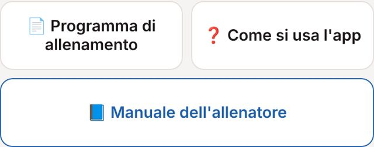
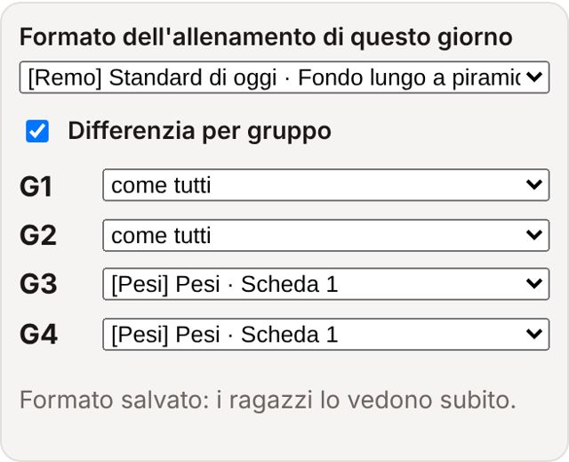

Manuale dell'allenatore
Tutto quello che si fa dall'area allenatore: formati del giorno, esercizi, atleti, programmi personali, test, presenze, schede e foglio Google. Aggiornato il 22 ottobre 2026.
Apri l'app →Area allenatore
Entrare e uscire come allenatore
In fondo all'app tocca Sono l'allenatore e scrivi la password. Compaiono l'Area allenatore, l'elenco atleti, i test, il registro presenze e, sotto «Chi sei», il pulsante 📘 Manuale dell'allenatore (questo manuale: gli atleti non vedono il pulsante).
Per uscire: «Esci dall'area allenatore» in fondo. Sullo stesso telefono puoi essere entrato anche come atleta: vedi entrambe le parti.


Repository dei formati
Lunedì, mercoledì e venerdì apri Area allenatore · esercizi e impostazioni: in cima c'è Formato dell'allenamento di questo giorno. Al posto della struttura fissa scegli uno dei formati, con l'etichetta della parte prevalente:
- [Remo] Fondo lungo a piramide (lunedì) · Turni da 8' remo + circuiti (venerdì) · Velocità al remo · Remo continuo a colpi crescenti · Staffette a squadre (Beach Sprint) · Tutti al remo a coppie
- [Circuito] 4 isole con sovraccarico (mercoledì)
- [Pesi] Scheda 1 · Scheda 2: corsa 15', attivazione 10', scheda, defaticamento 10', tutti in sala pesi
Il formato vale subito, senza Salva. Cambia la sequenza dei gruppi, i minuti, la pianta e il testo del remo o della scheda pesi; gli esercizi dei circuiti A e B restano. Il testo predefinito viene inserito solo se quell'isola è vuota. Per tornare al programma scegli Standard di oggi.
Differenzia per età: spunta la casella, scegli da quale anno di nascita («nati dal 2012 in poi») e il formato che fanno loro; tutti gli altri fanno il formato scelto sopra. L'app prende l'anno dall'elenco atleti, quindi ognuno vede da solo il suo allenamento. Esempio: il mercoledì i più grandi alle isole, i nati dal 2012 in sala pesi con la Scheda 2.
L'app non controlla gli spazi: se i due formati usano le stesse isole nello stesso momento, organizza tu i turni. Con i pesi non ci sono problemi, perché la sala pesi è separata. L'allenamento «in aggiunta» del giorno lo vedono solo quelli che fanno il formato principale.

Impostazione Tabata e lavoro al remoergometro
- Impostazione Tabata: una per tutti, per esempio «5 × 45"/15"». I tempi li gestite con l'app Tabata.
- Remoergometro: scrivi il lavoro, una riga per indicazione. Con Prendi dalla libreria remo inserisci un lavoro salvato, con Salva questo lavoro nella libreria remo lo conservi.
- Lunedì: se scrivi le righe come «Pezzo da 5': …» e «Pezzo da 10': …», ogni pezzo mostra ai ragazzi solo la sua riga.
- Le medie al remo sono personali: non scriverle per tutti.

Esercizi scelti dalle immagini
In ogni isola circuito tocca Scegli dalle immagini: tocca le foto (diventano rosse), poi Fatto. Con ↑ cambi l'ordine, con ✕ togli. Riga scritta serve per un'indicazione libera; Note e Indicazioni per gruppo per testo visibile a tutti o solo a G1–G4.


Scheda pesi, allenamento in aggiunta e salvataggio
- Scheda pesi (formati Pesi): una riga per esercizio, per esempio «Back squat · 4 × 12/15 · 85%». Se il nome corrisponde a un esercizio della libreria, i ragazzi vedono anche la foto.
- Allenamento in aggiunta (facoltativo): titolo, descrizione ed esercizi; se lo lasci vuoto non compare.
- Alla fine premi Salva: i ragazzi vedono subito le modifiche.

Come funziona la sequenza del lunedì
Piramide 5'-10'-10'-10'-5'. Dopo ogni pezzo al remo: recupero 5', poi circuito 5' e subito di nuovo al remo. G1 e G2 partono dal remo; G3 e G4 partono con due circuiti (5' sul loro e 5' sull'altro) ed entrano al remo a 20'.
Con 10 ragazzi e 5 remoergometri usa i gruppi G1 e G3 (oppure G2 e G4): non sono mai al remo nello stesso momento. «Isola 1» e «Isola 2» del remo sono semplicemente i tuoi 5 remoergometri.
Atleti, username, PIN e sedute
In Atleti e username, per ogni atleta: nome, username, anno, PIN (facoltativo) e sedute (6 o 4; con 4 martedì e giovedì sono in grigio). Il registro tiene conto dei cambi di sedute nel tempo. Aggiungi atleta, poi Salva elenco.
Se cambi il PIN a un atleta, sul suo telefono compare «Rientra con username e PIN». L'elenco con username e PIN si scarica dal foglio Google, scheda «Atleti»: File → Scarica.

📋 Programma e test
Accanto a ogni atleta tocca 📋 Programma e test (si chiude con ✕ in alto, toccando fuori o con Chiudi):
- Nuovo allenamento personale: tipo Remoergometro, Pesi, Circuito, Bike o Corsa, titolo e descrizione; per pesi e circuito anche gli esercizi dalle immagini. Lo vede solo lui, nel riquadro blu sotto la presenza.
- Test: i suoi risultati e la cronologia; puoi aggiungere un test per lui o cancellarne uno sbagliato.


Tabella dei test
I ragazzi inseriscono da soli i test: 500, 1000, 1500 e 2000 m remo, 4000 m bike. In Test atleti vedi il miglior tempo di ognuno per test, con la data. Tutto finisce anche nella scheda «Test» del foglio Google.
Importa test da un elenco: in cima a Test atleti apri «📥 Importa test da un elenco», scegli il test (per esempio 1000 m remo) e scrivi una riga per atleta: nome; anno; tempo; colpi; data, per esempio «Luca; 2009; 3:31.1; 36; 2026-10-09». Premi Anteprima: l'app riconosce gli atleti dal nome e dall'anno; dove non è sicura scegli tu dal menu. Poi Importa. I colpi finiscono nelle note; i test già presenti non vengono duplicati.

Registro presenze
I ragazzi premono Sono presente, anche senza aver scelto il gruppo. Nel registro scegli un giorno per vedere chi c'era; sotto c'è il riepilogo progressivo dall'inizio della preparazione: presenze su sedute previste (6 o 4 per atleta) e percentuale. Ogni presenza è anche una riga nella scheda «Presenze» del foglio.

Libreria remo, altri allenamenti, schede PDF, libreria esercizi
- Altri allenamenti: libreria remoergometro e sezioni bike, corsa, pesi e circuito. Apri una sezione e tocca Nuovo allenamento; per cambiarlo Modifica.
- Schede PDF: Carica schede PDF (anche più insieme); ✎ rinomina, ✕ elimina (tocca due volte). Le vedono tutti: non caricare qui questo manuale.
- Libreria · aggiungi esercizio: nuovi esercizi con foto, che poi trovi in «Scegli dalle immagini».


Dove stanno i dati e come si aggiorna lo script
Tutto è salvato nel foglio Google dell'app: schede Dati (da non modificare a mano), Presenze, Atleti e Test. PDF e foto caricati sono nella cartella Drive «Montefeltro Allenamento - file».
Quando arriva un nuovo Code.gs: foglio → Estensioni → Apps Script → cancella tutto e incolla → alla riga 8 la tua password → salva → Esegui il deployment → Gestisci deployment → matita → Nuova versione → Esegui il deployment. Il link dell'app non cambia.
La password allenatore si cambia alla riga 8 dello script, poi Nuova versione. Usane una lunga.
Problemi frequenti
- Non vedo le modifiche: ricarica la pagina; se l'app è nella schermata Home chiudila del tutto e riaprila.
- Un atleta non vede presenza e test: deve rientrare con username e PIN (compare il messaggio in rosso).
- «Connessione assente»: controlla internet; se capita a tutti, controlla il deployment dello script.
- Un test non si salva: lo script del foglio non è all'ultima versione.